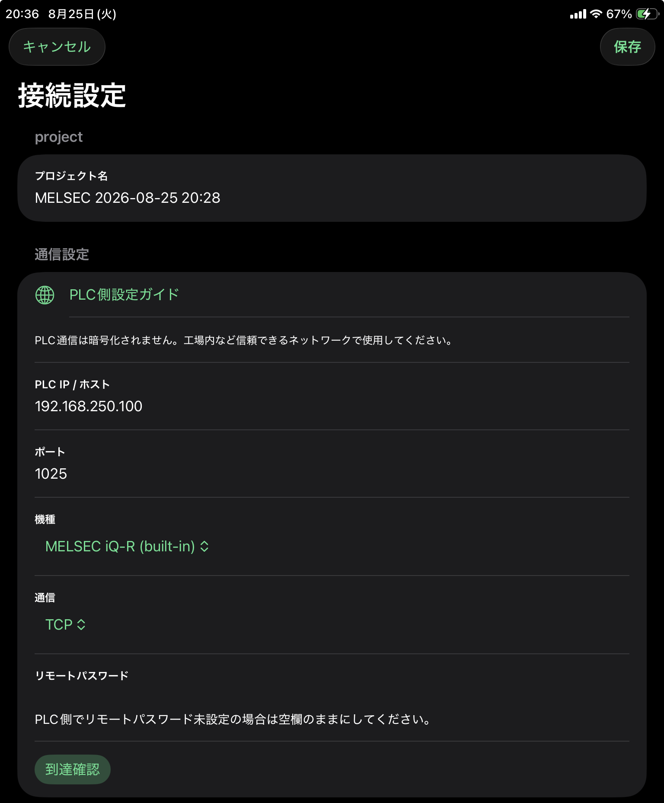
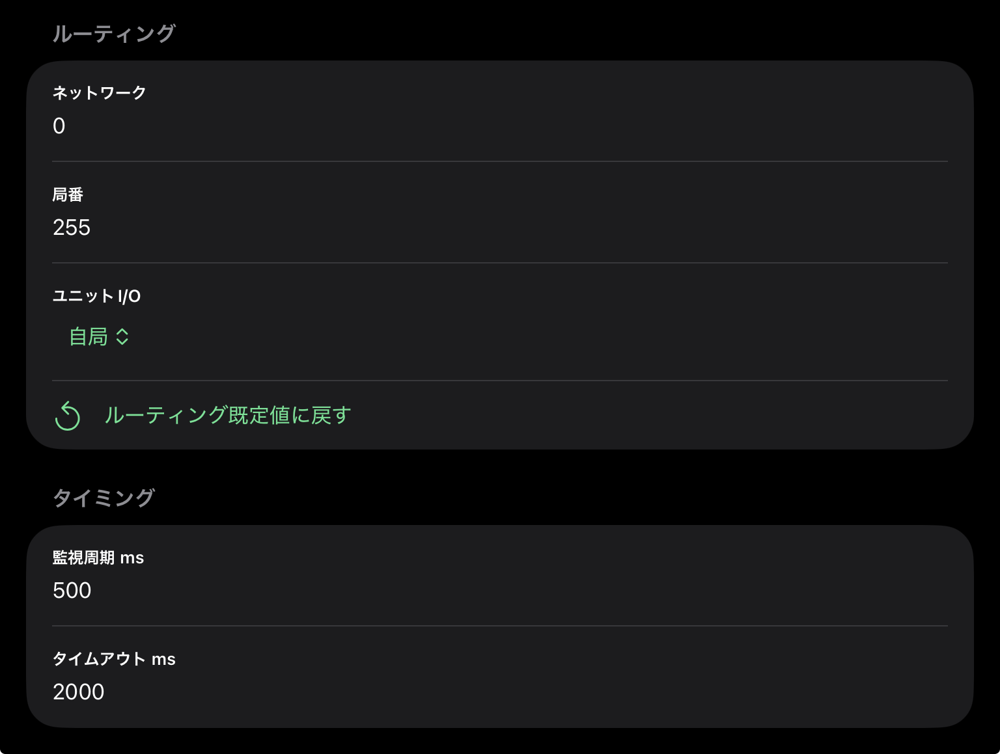

利用可能なデバイス
X、Y、M、D、L、F、B、SB、SM、STC、STN、TC、TN、CC、CN、W、SW、R、ZR、SD
MELSEC
MELSEC で使う接続設定と表記ルールです。
1025 です。TCP / UDPMELSEC iQ-R (built-in)、MELSEC iQ-R (RJ71EN71)、MELSEC iQ-F (built-in)、MELSEC iQ-L (built-in)、MELSEC MX-R (built-in)、MELSEC MX-F (built-in)、MELSEC QnUDV (built-in)、MELSEC QnUDV (QJ71E71-100)、MELSEC QnU (built-in)、MELSEC QnU (QJ71E71-100)、MELSEC-Q (QJ71E71-100)、MELSEC-L (built-in)、MELSEC-L (LJ71E71-100)。(built-in) は内蔵 Ethernet ポート、ユニット名付きは Ethernet ユニット経由の接続です。PLC 側の Ethernet 設定、通信許可、リモートパスワードは 接続設定例 で確認します。

0を指定してください。255を指定してください。自局、制御系CPU、待機系CPU、A系CPU、B系CPU、マルチCPU1号機、マルチCPU2号機、マルチCPU3号機、マルチCPU4号機、リモートヘッド1号機、リモートヘッド2号機、制御系リモートヘッド、待機系リモートヘッドから選択します。自局CPUに接続する場合は、自局を選択してください。100～10000 ms で指定します。既定値は 500 ms です。250～10000 ms で指定します。既定値は 2000 ms です。
この項目はデモの場合のみ設定できます。
Demoプロジェクトでは、アプリ内で生成された監視値が変化します。PLC 設定の 値変化パターン で、画面表示やトラップ確認に使う変化の出方を選べます。
スイープパルスウェーブステップ固定Demoの値は実機 PLC の状態を表すものではありません。値変化パターンはプロジェクト JSON には含まれません。
X、Y、M、D、L、F、B、SB、SM、STC、STN、TC、TN、CC、CN、W、SW、R、ZR、SD
X / YiQ-F は 8 進表記です。それ以外の MELSEC は 16 進表記です。
選択中の CPU機種で使えないアドレスやデータタイプは、登録時や読込時にエラーになります。
接続すると PLC との通信が始まります。接続前に対象 PLC、IP、ポート、TCP/UDP、通信許可、ネットワーク経路を確認してください。
デバイス書込や CPU操作は設備動作に影響します。設備側の安全手順に従って操作してください。
-- と表示されます。